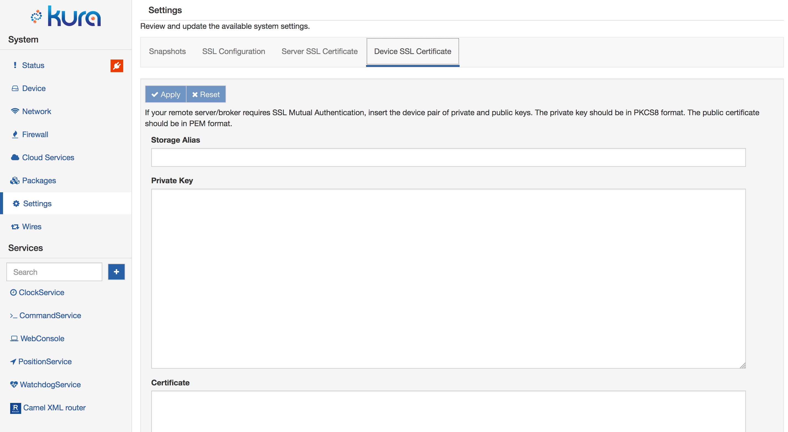

SSL Configuration
The Ssl Service manages the configuration of the SSL connections. It provides APIs to manage the trust certificates, private keys, and public certificates. It also enforces best practices that are not enabled by default in the Java VM, such as, enabling hostname verification, disabling the legacy SSL-2.0-compatible Client Hello, and disabling the Nagle algorithm.
To use this service, select the SSL Configuration option located in Settings as shown in the screen capture below.

The service provides the following configuration parameters:
-
Default protocol - defines the allowed SSL protocol.
-
Hostname verification - indicates whether hostname verification is enabled or disabled.
-
Keystore path - specifies the location of the Key Store files.
-
Keystore password - specifies the keystore access password. (Required field.)
-
Cipher suites - defines the allowed cipher suites.
At first boot, ESF verifies the accessibility of the default keystore provided with the distribution. If the keystore results accessible, ESF creates a new password that used to access and manage the keystore.
The SSL keystore password can be freely changed with a new password, by specifying its value in the Keystore Password field. At every boot, ESF verifies the coherence of the keystore in order to prevent a possible keystore tampering.
SSL Certificates Management
Two administrative features are available under Settings, as shown in the screen capture below, to manage the SSL certificates: Server SSL Certificate and Device SSL Certificate.
The Server SSL Certificate feature simplifies the process of keystore updating to add a public certificate, or a chain of public certificates, that are used to authenticate the broker. The update can be performed by setting the following fields:
-
Storage Alias - defines the alias to be used to store the certificates. (Required field.)
-
Certificate - provides a text area where the user can paste the certificate(s) that will be added to the SSL keystore. (Required field.)

The Device SSL Certificate feature provides the ability to add a couple of private and certificate(s) into the device's keystore in order to enable the mutual authentication. The update can be performed by setting the following fields:
-
Storage Alias - defines the alias to be used to store the certificates. (Required field.)
-
Private key - provides a text area where the user can paste the private key to be added. (Required field.)
-
Certificate - provides a text area where the user can paste a certificate or a chain of certificates. (Required field.)

Server SSL Certificate
The device requires a public key in its trust store in order to authenticate the broker and be able to setup an SSL connection. ESF is distributed with a pre-initialized SSL keystore that contains only some of the major Certification Authorities (CA) public keys.
If the broker uses a certificate signed by a different CA, or uses an auto-signed certificate, the system administrator must setup ESF with the correct certificates used to trust the remote cloud broker.
The inclusion of public certificates is accomplished with the Server SSL Certificate feature. To do so, the SSL Certificates form must be completed by providing a certificate or a certificates chain to be trusted and defining the alias used to register this new data in the device's trust store.

With this feature, when the device tries to instantiate an SSL connection with the broker, it receives the broker's public key chain. The SSL connection is secured only if the received chain is trusted. This connection can only happen if one of the certificates that compose the broker chain are available in the device's trust store.
When instantiating the device's trust store, the user decides whether to add a single certificate (leaf or CA certificate) or the full chain.
In the latter case, the chain should be provided by specifying the leaf certificate, followed by the CA certificate that is signing it, and so on, until the root CA is reached. An example of this scenario is depicted in the following image:

Device SSL Certificate & Mutual Authentication
Mutual authentication is a technique that allows authentication of the device that is connecting to the broker. The form available in Device SSL Certificate may be used to specify the keys needed to enable mutual authentication.
This authentication may be accomplished by specifying a couple of certificates (private and public keys) to be used by the client device to authenticate itself to the broker. This authentication is possible because the broker has the root CA certificate that has been used to sign the couple held by the device. In this way, the authenticity of the couple of certificates held by the device may be verified, and therefore, enable the two communicating parts (the broker and the device) to trust each other.
To enable mutual authentication, the user must complete the form with a well-formed key pair (public and private), and with an alias value that corresponds with the account name used to connect to the broker.

Key Pair Generation
The keys may be generated using specific software, such as OpenSSL or Keytool. This section describes how to use OpenSSL to generate a couple of private and public keys.
The private key may be created using the following command:
openssl genrsa -out certsDirectory/certs/certificate.key 1024
This command creates a new, 1024-bit private key in the specified path.
This key is used to generate a Certificate Signing Request (CSR) file, which is used by a CA to authenticate the certificate's creator.
A CSR file is created with OpenSSL using the following command:
openssl req -new -key certsDirectory/certs/certificate.key -out certsDirectory/crl/certificate.csr
If the user is creating their own certificate chain, the CSR file may be signed using a personal CA. This process may be accomplished using OpenSSL with the following command:
openssl ca -config certsDirectory/openssl.cnf -days 3650 -keyfile certsDirectory/ca/ca.key -cert certsDirectory/ca/ca.pem -out certsDirectory/certs/certificate.pem -infiles certsDirectory/crl/certificate.csr
The parameters are defined as follows:
-
-config - specifies the OpenSSL configuration file that must be used to sign the certificate.
-
-days - specifies how long the certificate is valid.
-
-keyfile and -cert - allow the specification of the CA that will sign the CSR file.
-
-out - identifies the location and the name of the signed certificate that will be created.
-
-infiles - identifies the location of the CSR file that has to be signed.
{% include note.html message='The private key may not be placed into the Kura Gateway Administration Console without a format conversion.' %}
OpenSSL offers the following command to convert the input private key to a non-encrypted PKCS#8 format that may be processed by the Kura code:
openssl pkcs8 -topk8 -inform PEM -outform PEM -in inPrivateKey.key -out outKey.pem -nocrypt